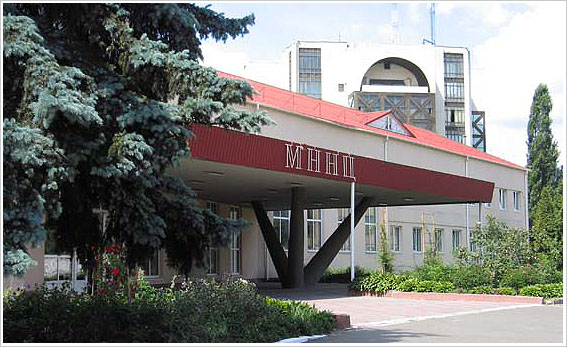

Міжнародний науково-навчальний центр інформаційних технологій та систем НАН України та МОН України

Міжнародний науково-навчальний центр інформаційних технологій і систем НАН України та МОН України
(Міжнародний Центр) - науково-навчальна організація, підпорядкована Національній академії наук України
та Міністерству освіти і науки України, створена у 1997 році при сприянні Уряду України, ЮНЕСКО,
Національної академії наук України та Міністерства освіти і науки України.
Міжнародний Центр є установою, в роботі якої органічно поєднуються науково-дослідна, навчальна та міжнародна діяльність в галузі інформатики, інформаційних та телекомунікаційних технологій. В Міжнародному Центрі сформовано унікальний колектив провідних вчених, фахівців та висококваліфікованих викладачів, які створюють і впроваджують нові інформаційні технології, що базуються на інтелектуальних комп’ютерно-телекомунікаційних середовищах.
Центральне місце в програмах робіт Міжнародного Центру займають проблеми штучного інтелекту, нові інформаційні та комунікаційні технології і системи, проблеми інформатизації, створення інформаційного суспільства в Україні та його взаємодії зі світовим інформаційним простором. Міжнародний Центр успішно вирішує одну з ключових проблем інформатики - створення нового покоління високих наукомістких інформаційних технологій - інтелектуальних інформаційних технологій, що здатні відтворювати елементи інтелекту людини. За основними науковими напрямками результати Міжнародного Центру визнані в країні і за кордоном.
Очолює Міжнародний Центр Олександр Євгенович Волков.
Міжнародний Центр є установою, в роботі якої органічно поєднуються науково-дослідна, навчальна та міжнародна діяльність в галузі інформатики, інформаційних та телекомунікаційних технологій. В Міжнародному Центрі сформовано унікальний колектив провідних вчених, фахівців та висококваліфікованих викладачів, які створюють і впроваджують нові інформаційні технології, що базуються на інтелектуальних комп’ютерно-телекомунікаційних середовищах.
Центральне місце в програмах робіт Міжнародного Центру займають проблеми штучного інтелекту, нові інформаційні та комунікаційні технології і системи, проблеми інформатизації, створення інформаційного суспільства в Україні та його взаємодії зі світовим інформаційним простором. Міжнародний Центр успішно вирішує одну з ключових проблем інформатики - створення нового покоління високих наукомістких інформаційних технологій - інтелектуальних інформаційних технологій, що здатні відтворювати елементи інтелекту людини. За основними науковими напрямками результати Міжнародного Центру визнані в країні і за кордоном.
Очолює Міжнародний Центр Олександр Євгенович Волков.
Інновації
Інтелектуальні інформаційні технології
Інформаційні технології інтелектуального управління
Комп'ютеризовані технології навчання
Біомедичні інформаційні технології
Мікроелектронні пристрої
Події
У 2013 році відзначалося 100-річчя з дня народження Олексія Григоровича Івахненка, засновника наукової
школи індуктивного моделювання, автора широко відомого Методу групового урахування аргументів (МГУА),
академіка НАН України
(30.03.1913 - 16.10.2007).
Детальніше
6 грудня 2013 року виповнилося 100 років з дня народженняМиколи Михайловича Амосова - видатного вченого в
галузі медицини і кібернетики, Героя Соціалістичної Праці, лауреата Ленінської та державних премій академіка
НАН України та НАМН України
(06.12.1913 - 12.12.2002).
Детальніше
Детальніше